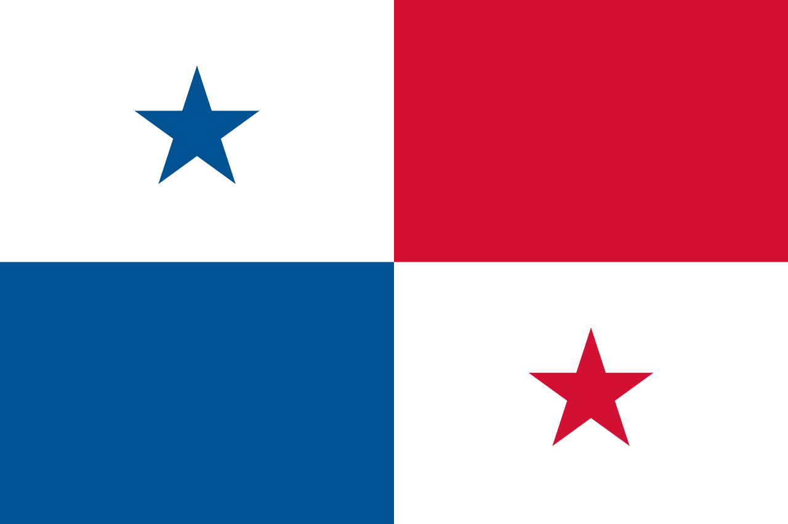

Símbolos patrios
Bandera Nacional
Escudo Nacional
![Blasón: Terciado en faja; 1º partido; primero de plata una espada y un fusil puestos en aspa; segundo de plata, una pala y un pico puestos en aspa; 2º un cielo partido de oro, un sol de lo mismo y de azur una luna de plata, brochante un mar de azur cargado con un itsmo de sinople; 3º partido; primero de azur, cornucopia contornada de oro; segundo de plata, rueda alada de oro. Cimera: Águila harpía en actitud de levantar el vuelo, con la cabeza vuelta hacia la izquierda. Tenante: 2 pares de banderas en astas de lanzas partesanas, doradas.Lema: Pro Mundi Beneficio (Para el beneficio del mundo). Otros elementos: 10 estrellas de oro por encima de todo.](Panama/escudo.jpg)
Ave Nacional
águila harpía (Harpia harpyja)
![Los adultos de ambos sexos tienen plumaje de similar color, que consiste de tres tonalidades básicas: gris en la cabeza; gris muy oscuro, casi negro en algunos ejemplares, en la doble cresta en la cabeza, el cuello, parte superior del cuerpo y de las alas; y gris muy claro, casi blanco, en la parte inferior del cuerpo y de las alas. En las patas tiene unas líneas oscuras. En la cola tiene franjas del gris oscuro y del gris muy pálido. El pico es gris muy oscuro. La piel en las patas es amarilla clara. Las uñas son de color gris muy oscuro. Posee un pico fuerte y garras que pueden alcanzar los 15 cm de largo.](Panama/harpia.jpg)
Flor Nacional
flor del Espíritu Santo (Peristeria elata)
![Tiene pseudobulbos ovoides de hasta 12 centímetros de alto, elongados, no aplanados y de cuatro hojas que alcanzan hasta un metro de longitud y 15 cm de ancho, plegadas. La inflorescencia emerge desde la base del bulbo con una longitud entre 1 a 1,8 metros y produce un total de 4 a 12 flores de color blanco marfil intenso, con manchas o pintas de color púrpura con la antera y pistilo de color amarillo. Las flores se hallan adornadas en el centro de su labelo con una bien definida y delicada "paloma". Su olor se parece mucho al de la cerveza](Panama/peristeria_elata_orchi.jpg)
Árbol Nacional
Sterculia apetala
![Tiene ramas horizontales. Corteza lisa o escamosa, de color verde a gris oscura, pardo amarillento o castaño rosáceo, con grandes lenticelas redondas de color blancuzco. Corteza interna blanquecina, que se oscurece al contacto con el aire. Savia transparente, algo pegajosa. Grosor de la corteza: 15 a 25 mm. Tiene una copa redondeada y densa (cerrada). Se ramifica alto, con una copa extendida, globosa, con ramas gruesasparcialmente ascendentes, ramitas jóvenes con pelos castaño rojizos y abundantes cicatrices de hojas.](Panama/sterculia.jpg)
La historia de Panamá ha sido ampliamente influenciada por la posición estratégica de este istmo estrecho que une América del Norte con América del Sur y que separa el océano Pacífico del océano Atlántico. Los Cunas, los Chocos y los Guaymis fueron algunas de las tribus indígenas que han ocupado la región. Aún cuando estas civilizaciones no fueron tan avanzadas como la de los Mayas o los Incas, puede que hayan sufrido la influencia de ellas. El explorador Rodrigo de Bastidas desembarcó sobre el territorio en 1501 y, al año siguiente, Cristóbal Colón reivindicó Panamá en nombre de España.
Panamá sirvió de base para el transporte marítimo de los minerales, metales preciosos y tesoros provenientes del Perú y encaminados hacia España por un eje que atravezaba el país de un océano al otro, de Panamá al puerto de Nombre de Dios, sobre el Atlántico. Dependiente del virreinato del Perú, Panamá fue integrada a la Nueva Granada a comienzos del siglo XVII y permaneció bajo dominación española hasta 1821. La Nueva Granada fue entonces unida a la República de la Gran Colombia, creada bajo el arbitrio de Simón Bolívar. En 1826, Bolívar reunió a los gobernantes de cinco estados de la Gran Colombia, en Panamá, durante el congreso panamericano, a fin de construir con ellos la unidad del continente sudamericano. Murió, sin embargo, en 1830, antes de haber consolidado esta unificación.
Ya en 1855, los norteamericanos habían acabado la construcción de una vía férrea que atravezaba Panamá de un océano al otro. Los españoles habían tenido la idea de construir un canal para unir los dos océanos, pero fue un francés, Ferdinand de Lesseps, quien, en 1880, realizó finalmente el primer intento con la Compañía Universal del Canal Interoceánico. Sin embargo, los trabajos fueron interrumpidos nueve años más tarde, en razón de un grave escándalo político-financiero que sacudió a la III República Francesa.
En 1903, Colombia rehusó a los Estados Unidos el derecho de acabar el canal. En reacción, los Estados Unidos incitaron a Panamá a sublevarse. El 3 de noviembre de ese mismo año, Colombia debió entonces consentir la creación de la República de Panamá. Tropas norteamericanas fueron enviadas para sostener al nuevo gobierno panameño y, desde el 18 de noviembre, los derechos del canal fueron vendidos a los Estados Unidos.
El canal fue acabado en 1914, y devino un pasaje obligado para los buques que navegaban entre los océanos Atlántico y Pacífico, evitándoles el largo, y a menudo peligroso, viaje alrededor del Cabo de Hornos, en el extremo de América del Sur. Los Estados Unidos controlaban el canal, y la mayoría de los puestos de dirección fueron confiados a ciudadanos norteamericanos.
Desde la independencia, adquirida en 1903, la vida política de Panamá ha tenido sobresaltos, habiendo mucho en juego en las relaciones a menudo tensas con el vecino norteamericano. En 1968, a continuación de una serie de discutidas elecciones y de crisis constitucionales, el general Omar Torrijos, comandante de la guardia nacional, tomó el poder.
A la muerte de Torrijos, en 1981, su ministro de Defensa, el general Manuel Antonio Noriega devino cada vez más influyente. En 1988, Eric Arturo Delvalle, vuelto presidente en 1985, intentó expulsar a Noriega, quien, luego, destituyó a Delvalle. Noriega gobernó como jefe de la Asamblea Nacional y decretó el estado de sitio.
El régimen de Noriega se volvió cada vez más represivo y corrupto. Las relaciones con los Estados Unidos se deterioraron, el presidente norteamericano, George Bush, llamó en mayo de 1989 al ejército y al pueblo panameño a derrocar a Noriega. En octubre de 1989, una tentativa de golpe de Estado contra Noriega fracasó, y el 20 de diciembre del mismo año los Estados Unidos enviaron tropas a Panamá (operación "Justa Causa"). Noriega se refugió en la nunciatura del Vaticano, pero fue extraditado a los Estados Unidos; en 1990, los norteamericanos instalaron en el poder a Guillermo Endara. Reconocido culpable de tráfico de drogas, Noriega fue condenado, en 1992, a purgar una pena de prisión de 40 años en los Estados Unidos.
75.517 km²